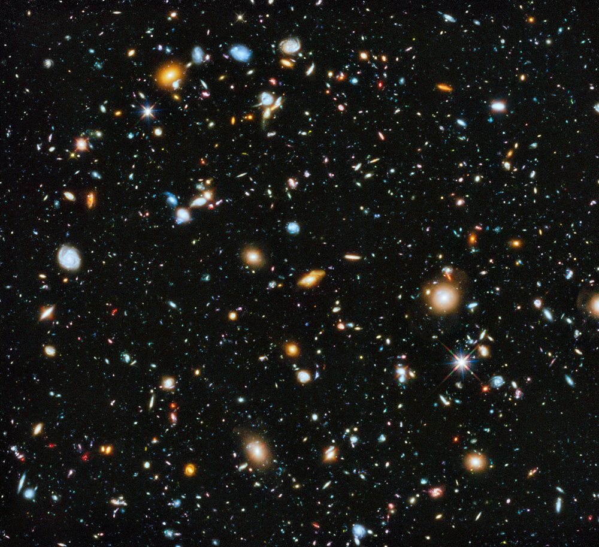
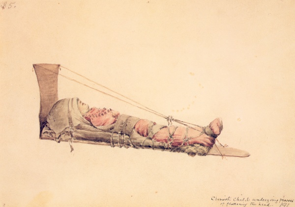

What Universe Model is
Universe Model presents the Holistic Model of Reality (HMR): one connected account of reality, from before the Big Bang to the human body, and a research program to put its most concrete claim to the test by building the human body as a working, physics-based simulation.
The problems humanity faces share a root
Chronic disease is rising and is rarely reversed. Mental illness is widespread and poorly understood. People are divided over what is true, what is right and what life is for, between neighbors as much as between nations.
These look like separate problems, handled by separate experts: doctors, psychiatrists, scientists, priests, politicians. HMR's view is that they share a root. After thousands of years of philosophy and centuries of science, humanity still cannot say what reality is. It has no agreed account of what a human being is, or of what a healthy body and a sound mind look like.
Each discipline works deeper and deeper into its own corner, and the corners never meet. It is like a thousand people each assembling one part of a jigsaw puzzle, none of whom has ever seen the picture on the box.
- Health has no defined healthy body to measure against.
- Mental health has no agreed account of what is real to measure minds against.
- Science describes how reality behaves, not what it is.
- Values have nothing firm to rest on, so they divide us.
Everyone has a model of reality. Almost no one has a holistic one
A model of reality is the picture of the world that any living thing acts on: what exists, how it behaves, what matters. Having one is not optional. A blade of grass, an animal and a human each operate on one. Each model has higher or lower fidelity than another, depending on the sensory hardware that gathers it and, possibly, the mental faculties that interpret it. A bat's world is built from echoes, a bee's from ultraviolet light, a human's from five senses and the instruments built to extend them.
So a model of reality starts in the body. The body is the hardware, and it sets the limits of what a being can experience at all: with eyes you see, without them you do not. The mind then interprets those signals and builds a sense of identity from them: there is a me, there is something that is not me, and the two interact. From that picture a being works out what to do. What feels good and does no harm, it keeps doing; what turns out to harm, it learns to stop; and it weighs the one against the other. That weighing is the start of a value system.
This is why partial models fall short in a way that matters. A value system needs the whole context: what I am, what everything else is, and how we are connected. A partial model does not have that context, so it cannot say what is truly worth doing. Only a holistic model can.
Humanity's best models to date are partial. Physics models matter, biology models life, medicine models disease, psychology models the mind, religion models meaning. Each can be divided into ever finer detail, and still miss what only appears when the system is seen as a whole. It is like an engineer who knows every part of a bridge except where it is anchored.
A holistic model of reality is different in kind. It joins the parts into one connected theory, so that understanding one part gives insight into every other.
Most people live by partial models of reality. What humanity needs is a holistic one, and if HMR is right, it has never had one before.
That would mean humanity has always run without an operating system: billions of capable minds, each running on fragments. HMR is offered as that operating system.
There is a theorem for this. Any system that steers something well must contain a model of the thing it steers: “every good regulator of a system must be a model of that system” (Conant and Ashby, 1970). A person steering a life with a partial model of reality is a regulator with part of the system missing. It can be exact about the parts it has and still steer wrong.
Engineers have an exact test. A system can be fully steered only if every part of its state can be seen and every part can be reached (Kalman, 1960). When that holds, information runs through the whole system and it can be tuned as one thing. Miss one part and no skill with the rest makes up for it.
One missing fact can reverse a conclusion. In Simpson's paradox a treatment that helps every group of patients looks harmful when the groups are pooled, because one variable was left out. So a value system can be sincere and careful, and still do harm, because of one thing it does not know about what a person is.

Where did all this come from? →Every point of light is a galaxy. Materialism has to hold that all of it began as a speck smaller than an atom and blew up. HMR holds that Universal Intelligence imagined it, the way you can imagine a whole dream from nothing.NASA, ESA and others, public domain
The first example, as an artist who went there painted it. On the Columbia River and the coast north of it, a baby spent its first year strapped to a cradleboard, with a second board bound across the forehead. The soft skull grew into a long, flat slope. Look at the woman's profile: her head was shaped the same way when she was a baby. To her people it was beautiful, and it marked a free person of standing. Slaves and outsiders did not have it. Kane, who travelled there in 1847, called it a “distinguishing mark of freedom”.
The parents who did this were not cruel. They did it out of care for their child, on the best model of reality they had.


The oil painting is a studio composite: Kane combined his separate field sketches of a woman and of an infant, and shows the board lifted rather than pressing (Art Canada Institute). How the cradle worked, and that the custom lasted into the twentieth century: Pitt Rivers Museum, University of Oxford.
None of these people is careless. Each is following a model of what is real, and the verdict comes from the model. That is why a value system is only as good as the model under it, and why a partial model can lead sincere people to opposite conclusions.
One account, from before the Big Bang to the human body
HMR proposes that physical reality emerges from Universal Intelligence (UI), a non-physical intelligence that has matured over time toward greater coherence, and that each human is an instance of UI living through a physical body. It draws on modern science and on the world's contemplative traditions, and is not affiliated with any religion.
Its most concrete and testable part is the human body understood as a tensegrity held together by fascia. That is where the work begins: with a new model of health, a model of mental health, and a physics-based simulation of the ideal human body.
Imagine a doctor who has studied every organ in a laboratory, one at a time, but has never met a living person. They could describe the heart, the lungs and the liver in perfect detail and still not understand that together they make someone who laughs, walks and thinks. Humanity's knowledge is in that position. HMR is an attempt to supply the missing view: what the whole is, so that the parts make sense.
Select a topic for HMR's short answer.
The origin of physical reality and its laws
Before physical reality, HMR describes UI as unlimited intelligence without order. It settled on orderly thought, and its first structured thought separated a "me" from a "not me": a distance between two points. From that came spacetime, then matter. The laws of physics are the rules UI holds fixed so that many separate beings can share one stable world. More →
Why mathematics describes nature
Science has never explained why the universe obeys equations. In HMR the answer is direct: mathematics came first. Geometry, ratio, relationships and π were among the original orderly thoughts from which physical reality was built, so nature is mathematical because it is made of mathematical thought.
What life, death and a human being are
Life is UI placing many instances of itself into one shared world, from grass to animals to people, so that they learn from one another. A human being is UI's most advanced instance in physical reality. Death is a transformation, not an end: the experience of a life is kept and added to UI's understanding, and the transition may differ for every form of life.
The body as a tensegrity, and disease as deviation from its ideal
Bones act as struts and fascia as a continuous web of tension around them, so the body holds its shape the way a tensegrity does. A perfect tensegrity is the reference for full health. Every physical condition is a measurable deviation from it, and HMR's first test, the densification hypothesis, asks whether denser fascia alone can produce the shapes of real disease.
The mind, sanity and mental health
Sanity can be measured three ways: how true a person's picture of reality is, whether they can achieve what they set out to do, and how they meet other people. Today's institutions use the last two, because the first needs an agreed account of reality. HMR also links the mind to the body: posture, tension and the brain's maps of the body shape how a person feels and thinks. More →
How the world's traditions and modern science describe the same source
UI is what traditions have called God, Brahman or the Tao. People who studied their own bodies and minds for a lifetime, in yoga, martial arts and meditation, found practices that work on fascia and found a source behind reality. Science measures the same body from outside. HMR offers one language for both. No one has to give up their tradition: every tradition is a set of thoughts within HMR that began at a different place in human history, so none is excluded. More →
Why the Big Bang happened
The Big Bang was the moment UI's first model of itself, a "me", a "not me" and the distance and boundary between them, became complete and closed. That completed system set off everything after it. The step-by-step account →
What gravity is
In HMR, distance is the first quantity reality ever had, and gravity is reality's trend toward coherence: coherent matter draws together and takes up distance. The full mathematics is open work. Where physics stands →
Consciousness, and how mind and body connect
Consciousness is UI itself, the awareness behind every life. The mind is how that awareness thinks inside one body, and the body, through its fascia and nerves, is how it meets the physical world. What a person is, is the whole mind-body system. More →
What God pays attention to, and how prayer works
UI experiences every life from within, here and now, so it attends to everything at once, through each of us. It works through the laws it set rather than breaking them. Defining UI →
Suffering, mistakes and why the world is imperfect
UI matures by stages, as a person does, and maturing means testing limits and sometimes failing. Suffering is real, and part of the purpose of a human life is to help minimize the suffering of all creatures. HMR Values →
What life is for, and how to live
To take part in UI's maturation: push your limits, learn, treat others as yourself, care for your body and appreciate the experience. HMR Values →
Animals and all other life
Every living creature is an instance of the same UI in a different body, so the care owed to people extends to all life. HMR Values →
Artificial intelligence
Humans building AI is a copy, at a smaller scale, of what UI did in making us, and it is happening now, alongside HMR, for a reason. Humans as UI's AI →
Children, and how to raise them
Childhood, especially puberty, is when the body's tensegrity is shaped most. Fascia care from birth, and a clear account of what a child is, change the course of a life. Do you have kids? →
The future of humanity
A body restored to its ideal, one shared account of reality, and, if distance itself can be worked with, a world without the limits distance imposes. Below →
Explore
The gaps in modern science, from gravity to consciousness, and why they matter to anyone who values reason.
Science BridgeWhere HMR differs from science: an account of what came before the Big Bang that never breaks logic.
HMR valuesA value system grounded in what reality is, from how we treat each other to how we treat every creature.
The perfect bodyWhy health should be measured against an ideal human body defined by physics, and the central hypothesis we will test.
Exercise todayWhy HMR holds that the tensegrity should be optimized first, and exercise built on top of it.
Mental healthWhat sanity means, a history that keeps repeating, and how the body, belief and society shape the mind.
Universal IntelligenceWhat UI is, its life cycle from before the Big Bang to now, and its capabilities and limits.
East and WestHow the world's body practices and traditions work on fascia, and HMR's language for joining them with science.
SimulationAn interactive 3D human tensegrity, the evidence behind it, and how the full model is being built.
Road AheadHow the data becomes a simulation of the ideal body, then a campaign of millions of simulated bodies, then a new paradigm for health.
The libraryExactly what has been collected: documents, the scholarly record, the Visible Human, images, films and measurements.
Get in touchPhysicists, scientists, clinicians and anyone with data, questions or criticism: we want to hear from you.
Get in touch
Physicists, scientists in every field, researchers, clinicians, movement teachers, athletes, and anyone with data, questions or criticism are welcome to write. We especially want to hear where you think the model is wrong.
The problems people face share a root: no shared, complete picture of reality. Universe Model presents one and is building the means to test it.